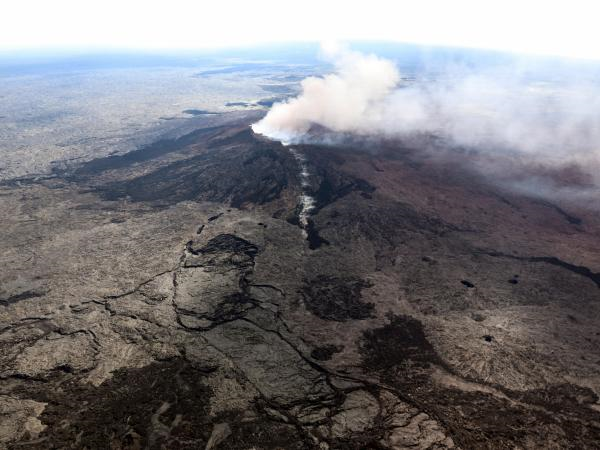

El Gobierno declaró el estado de emergencia después de la erupción del volcán en Hawái
Se decretó el estado de emergencia para poder movilizar a todos los servicios y fondos de urgencia del Estado vinculados a catástrofes naturales.
Por: XFM | 04/05/2018 - 08:03 p.m.

Cientos de habitantes de Hawái huyeron este viernes de sus viviendas, luego de la erupción del vocán Kilauea el día
anterior, que causó flujos de lava, nubes de cenizas rosadas y emanaciones tóxicas.
La proximidad de casas a los pies del volcán generó una fuerte movilización de las autoridades locales, bajo la dirección del gobernador de
Hawái, David Ige, quien decretó el estado de emergencia para poder movilizar a todos los servicios y fondos de urgencia del Estado vinculados
a catástrofes naturales.
Imágenes de medios locales mostraron corrientes de lava que serpenteaban a través de los bosques, en tanto la agencia de Protección Civil del
archipiélago informaba sobre "emisiones de vapor y lava de una grieta en la subdivisión Leilani en el área de Mohala Street" seguidas de
explosiones, y ordenaba a todos los residentes abandonar el área afectada. No se reportaron víctimas el viernes por la mañana.
Unos 700 edificios y 1.700 personas están sujetos a evacuaciones obligatorias
El gobernador movilizó a las tropas de la Guardia Nacional en el archipiélago y pidió a los habitantes que presten atención a las advertencias
de la Defensa Civil. "Por favor estén alertas y preparados para mantener a salvo a sus familias", escribio Ige en su cuenta de Twitter.
Autoridades del Servicio Geológico de Estados Unidos (USGS), de la unidad del observatorio vulcanológico, vigilaban y evaluaban por medios terrestres
y aéreos la magnitud de la erupción, que comenzó el jueves alrededor de las 16:45 (hora local) luego de las docenas de temblores que se registraron
en los últimos días. Un funcionario añadió que en la zona habitan unas 10.000 personas.
'Nuevas grietas'
